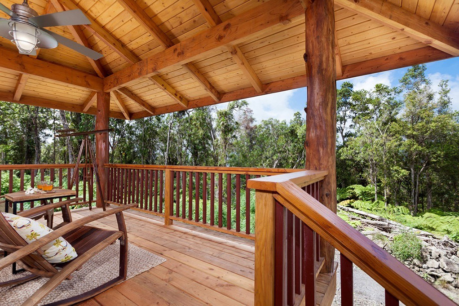

ศิลปะวัฒนธรรมไทย บ้านเรือนไทย
เรือนนอน
เป็นเรือนที่ใช้นอน ในครอบครัวที่ขยายขึ้น มันจะมีการสร้างเรือนเพิ่มรอบๆ ชานเรือน
ทำให้สมาชิกทุกคนในครอบครัวสามารถออกมาใช้งานชานเรือนได้สะดวก
- ชานเรือน
- ซึ่ง ชานเรือน มีลักษณะเป็นชานกว้างๆ พื้นที่โล่งเชื่อมกับเรือนหลังอื่นๆ
บางบ้านที่มีฐานะอาจมีศาลาอยู่กลางชานบ้านด้วย หากใครนึกไม่ออกให้คิดภาพตามบ้านคุณพี่หมื่นเดช
ในละครเรื่องบุพเพสันนิวาสไว้นะคะ ฉากที่ครอบครัวหมื่นเดชมาพบปะพูดคุยกันบ่อยๆ นั่นเอง
ซึ่งถือเป็นหนึ่งในประโยชน์ใช้สอยของชานบ้าน รวมไปถึงใช้สำหรับพักผ่อน จัดงานแต่ง เป็นพื้นที่รับรองแขก ฯลฯ
ต้ถุนสูง หลังคาสูง
ชายคายื่นยาว และมีชานกว้าง นั่นเอง แต่ทั้งหมดที่กล่าวมาเป็นภาพรวมค่ะ เพราะ “บ้านเรือนไทย”
ยังสามารถแบ่งออกเป็น 2 ประเภท ดังนี้ เรือนครอบครัวเดี่ยว และเรือนหมู่

ข้อมูลจาก
https://www.bareo-isyss.com/service/architecture/%E0%B8%9A%E0%B9%89%E0%B8%B2%E0%B8%99%E0%B9%80%E0%B8%A3%E0%B8%B7%E0%B8%AD%E0%B8%99%E0%B9%84%E0%B8%97%E0%B8%A2/#:~:text=%E0%B9%80%E0%B8%81%E0%B8%A3%E0%B8%B4%E0%B9%88%E0%B8%99%E0%B8%A1%E0%B8%B2%E0%B8%82%E0%B8%99%E0%B8%B2%E0%B8%94%E0%B8%99%E0%B8%B5%E0%B9%89%E0%B9%81%E0%B8%A5%E0%B9%89%E0%B8%A7,%E0%B9%80%E0%B8%A3%E0%B8%B7%E0%B8%AD%E0%B8%99%E0%B8%84%E0%B8%A3%E0%B8%AD%E0%B8%9A%E0%B8%84%E0%B8%A3%E0%B8%B1%E0%B8%A7%E0%B9%80%E0%B8%94%E0%B8%B5%E0%B9%88%E0%B8%A2%E0%B8%A7